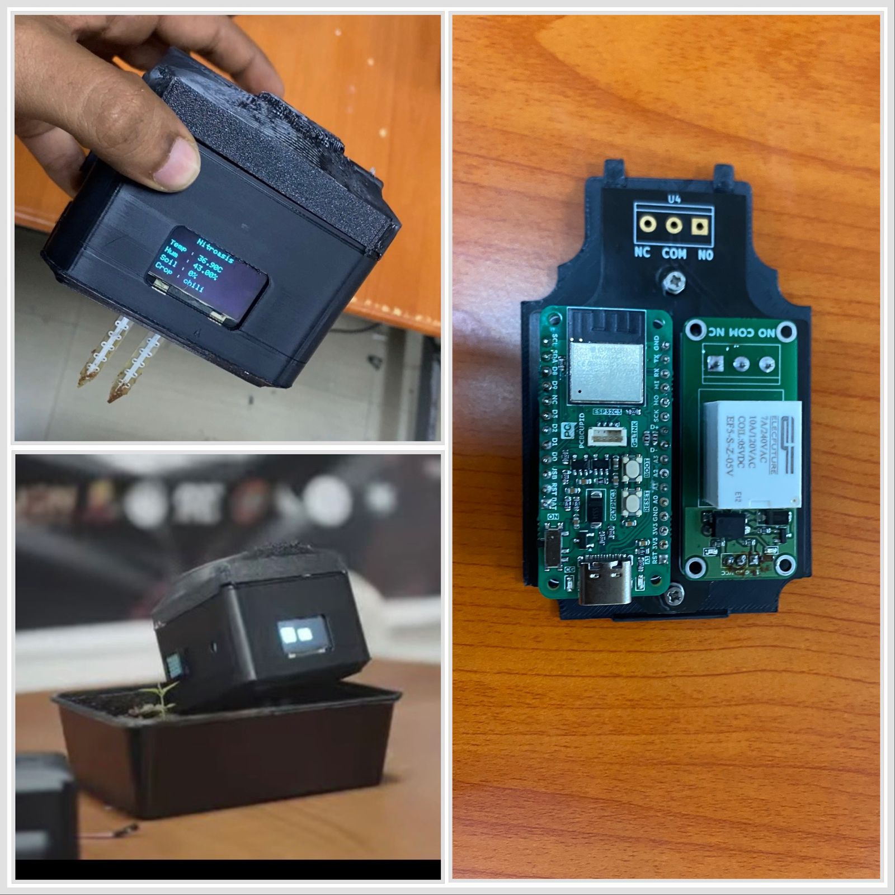

Nitroasis delivers edge-computed soil diagnostics, on-device machine learning crop classification, anti-chatter smart irrigation, and solar-powered durability with zero dependence on remote cloud servers.

Directly inspect, orbit, pan, and zoom the real 3D printable STL files of the Nitroasis weather-sealed field enclosure. Toggle between the top solar cover, the bottom electronics chassis, and the full assembled view.
Experience the exact firmware logic from main.ino and reciver.ino. Adjust field sensor inputs to trigger on-device TinyML inference, toggle the retro OLED HUD vs RoboEyes, and observe smart irrigation relay hysteresis.
[Temp, Humidity, Soil%] • Latency: ~11.8ms
/status
HTTP 200 OK
A decentralized multi-node architecture designed for autonomous field deployment, high electrical safety, and seamless off-grid operation.
Powered by the ESP32-S3 dual-core microcontroller running FreeRTOS. Broadcasts a dedicated local Wi-Fi Access Point (SSID: CropAI) with zero reliance on cloud or commercial cellular networks.
Employs a Wemos D1 Mini / ESP32 connected as a station to CropAI. Polls the master node via JSON HTTP client every 1,000ms and actuates the high-current relay module.
http://192.168.4.1/statusComplete reference wiring specifications for both the ESP32-S3 Master Sensor Unit and the Receiver Actuator Module.
| Module | Pin / GPIO | Signal Type | Operating Voltage | Description & Calibration |
|---|---|---|---|---|
| DHT11 / DHT22 | GPIO 1 | Digital Single-Wire | 3.3V DC | Ambient temperature (-20 to 60°C) and relative humidity (20–90% RH). |
| Capacitive Soil Sensor | GPIO 2 | Analog Input (ADC1_CH1) | 3.3V DC | 12-bit ADC (0–4095). Inverted linear mapping: 4095 (bone dry) to 0 (submerged). |
| SH1106 OLED Display | GPIO 4 (SDA) | I2C Data | 3.3V DC | I2C bus address 0x3C. Connect 4.7kΩ pull-up resistor to 3.3V. |
| SH1106 OLED Display | GPIO 5 (SCL) | I2C Clock | 3.3V DC | I2C clock bus driving 128×64 monochromatic display at 400kHz. |
| LDR Light Sensor | GPIO 6 | Analog Input (ADC1_CH5) | 3.3V DC | 10kΩ voltage divider. Threshold: > 2000 ADC count = DAY, ≤ 2000 = NIGHT. |
| Capacitive Touch Button | GPIO 7 | Capacitive Touch | Internal | Hardware capacitive sensor. Threshold 25,000 toggles RoboEyes / Telemetry HUD. |
| Irrigation Relay Node | GPIO 27 | Digital Output | 5.0V Coil / 3.3V Logic | Drives optocoupled SPDT relay. High-level triggers submersible water pump. |
Equipped with an 18V 20W Monocrystalline PV panel routed through an MPPT charger to dual 18650 Li-ion cells. Provides 72+ hours continuous autonomous runtime during overcast monsoons.
Water pumps exhibit severe inductive back-EMF during shutoff. The relay module features a flyback diode (1N4007) and optocoupler isolation (PC817) to prevent micro-resets or memory corruption on the microcontroller.
Running full neural network inference directly on the ESP32-S3 microcontroller with zero external internet dependencies.
The model Akash501-project-1_inferencing.h accepts a 1D feature array of 3 normalized floating-point variables:
// Feature Callback Buffer features[0] = temperature; // Range: 10.0 to 50.0 °C features[1] = humidity; // Range: 15.0 to 100.0 % features[2] = soilPercent; // Range: 0 to 100 % signal_t signal; signal.total_length = 3; signal.get_data = &raw_feature_get_data; // Run Quantized INT8 Inference run_classifier(&signal, &result, false);
How Nitroasis prevents relay oscillation, eliminates dry-run pump burnout, and enforces hardware fail-safes.
If a single threshold (e.g. 35%) is used, wind and soil absorption cause the analog reading to bounce between 34% and 36%, switching the relay thousands of times an hour and destroying motor windings.
Nitroasis creates an intentional 15% hysteresis gap:
• Turn ON only when soil drops below 30%
• Keep pumping until soil reaches 45%
If the transmitter node loses power, or Wi-Fi interference breaks communication, the receiver's LINK_TIMEOUT_MS (10,000ms) timer triggers.
Instead of leaving the water pump running and flooding the farm, the receiver shuts the relay OFF immediately upon 10 seconds of telemetry silence.
Submersible farm pumps rely on surrounding water for cooling. In the event of pipe bursts or dry borehole wells, continuous running causes catastrophic motor seizure.
Nitroasis limits any single continuous irrigation cycle to 5 minutes maximum, enforcing a mandatory 30-second thermal cooldown.
Fish excretions and feed residue decompose via nitrifying bacteria into soluble bio-active nitrates ($NO_3^-$).
Nitroasis explores routing this nutrient-rich aquaculture water directly into the drip irrigation network, cutting synthetic fertilizer expenditure by up to 40%.
Integrated conversational agronomy agent trained on sustainable crop management, NPK nutrient balancing, and Indian agricultural subsidy schemes.
Explore the annotated C++ firmware code and REST API endpoints powering Nitroasis.
// ============================================================
// NITROASIS: ESP32-S3 SENSOR & TINYML HUB (main.ino)
// Dual-Core FreeRTOS + Edge Impulse + Wi-Fi SoftAP
// ============================================================
#include <WiFi.h>
#include <WebServer.h>
#include <ArduinoJson.h>
#include <DHT.h>
#include <Wire.h>
#include <Adafruit_SH110X.h>
#include <FluxGarage_RoboEyes.h>
#include <Akash501-project-1_inferencing.h>
#define DHTPIN 1
#define DHTTYPE DHT11
#define SOIL_SENSOR 2
#define SDA_PIN 4
#define SCL_PIN 5
#define LDR_PIN 6
#define TOUCH_PIN 7
#define TOUCH_THRESHOLD 25000
const char *ssid = "CropAI";
const char *password = "12345678";
DHT dht(DHTPIN, DHTTYPE);
Adafruit_SH1106G display(128, 64, &Wire, -1);
RoboEyes<Adafruit_SH1106G> roboEyes(display);
WebServer server(80);
volatile float temperature = 0.0;
volatile float humidity = 0.0;
volatile int soilPercent = 0;
String best_crop = "--";
String daynight = "--";
float features[3];
TaskHandle_t ServerTask;
TaskHandle_t SensorTask;
SemaphoreHandle_t dataMutex;
// Core 0: Web Server Task
void ServerTaskCode(void *pvParameters) {
WiFi.mode(WIFI_AP);
WiFi.softAP(ssid, password);
server.on("/", HTTP_GET, handleRoot);
server.on("/status", HTTP_GET, handleStatus);
server.begin();
while (true) {
server.handleClient();
vTaskDelay(5 / portTICK_PERIOD_MS);
}
}
// Core 1: Sensor Sampling & TinyML Inference
void SensorTaskCode(void *pvParameters) {
for (;;) {
float t = dht.readTemperature();
float h = dht.readHumidity();
int soilRaw = analogRead(SOIL_SENSOR);
soilPercent = constrain(map(soilRaw, 4095, 0, 0, 100), 0, 100);
daynight = analogRead(LDR_PIN) > 2000 ? "DAY" : "NIGHT";
// Edge Impulse classification
features[0] = t; features[1] = h; features[2] = soilPercent;
signal_t signal = { .total_length = 3, .get_data = &raw_feature_get_data };
ei_impulse_result_t result;
if (run_classifier(&signal, &result, false) == EI_IMPULSE_OK) {
// Find top label
}
if (roboMode) roboEyes.update();
else displaySensorHUD();
vTaskDelay(100 / portTICK_PERIOD_MS);
}
}Field-tested instructions for commissioning Nitroasis in remote agricultural plots.
| Symptom / Issue | Probable Cause | Diagnostic Test | Recommended Solution |
|---|---|---|---|
| OLED Display remains black | I2C bus address mismatch or loose wiring on SDA/SCL. | Run an I2C scanner sketch; check for address 0x3C or 0x3D. |
Verify SDA on GPIO 4 and SCL on GPIO 5. Ensure pull-up resistors are installed. |
| Soil Moisture always reads 0% or 100% | Inverted ADC calibration or analog channel attenuation issue. | Measure voltage on GPIO 2: Air should be ~3.0V, water ~1.2V. | Adjust map(soilRaw, 4095, 0, 0, 100) offsets to match your soil salinity. |
| Receiver motor turns OFF after exactly 10s | Link timeout fail-safe triggered due to lost HTTP connection. | Check Wi-Fi RSSI signal between transmitter and receiver nodes. | Ensure receiver is associated with CropAI AP. Reposition high-gain antennas. |
| Edge Impulse compiler error on build | Naming collision between RoboEyes direction macros and Edge Impulse. | Look for #undef N, #undef S, etc. before include headers. |
Keep lines 15–23 in main.ino undefining compass macros before including EI headers. |